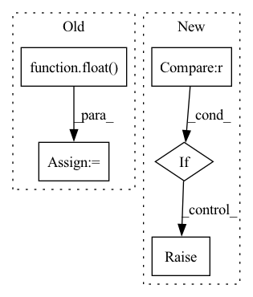

Pattern ID :9854
Before Change
// constraint on background size.
loss_sz_con = torch.tensor([0.])
bsz = float( scores_pos.shape[0])
if self.use_size_const:
loss_sz_con = self.size_const(masks_pred=masks_pred) / bsz
total_loss = total_loss + loss_sz_con
After Change
cams=None
):
if self.dataset_name == constants.GLAS :
return self.forward_glas(
scores_pos=scores_pos,
sc_cl_se=sc_cl_se,
labels=labels,
masks_pred=masks_pred,
scores_neg=scores_neg
)
if self.dataset_name == constants.CAMELYON16P512:
return self.f_camelyon16(
scores_pos=scores_pos,
sc_cl_se=sc_cl_se,
labels=labels,
masks_pred=masks_pred,
scores_neg=scores_neg,
cams=cams
)
raise NotImplementedError
def __str__(self):
return "{}()".format(self.__class__.__name__,)In pattern: SUPERPATTERN
Frequency: 3
Non-data size: 5
Instances Fragment ID: 35300699
Project Name: sbelharbi/deep-wsl-histo-min-max-uncertainty
Commit Name: 8af2e1a0370e2defdb7fb3f0930777daafaa5e2f
Time: 2021-12-19
Author: soufiane.belharbi@gmail.com
File Name: deepmil/criteria.py
M Class Name: TrainLoss
N Class Name: TrainLoss
M Method Name: forward(7)
N Method Name: forward(6)
M Parent Class: nn.Module
N Parent Class: nn.Module
M File Name: deepmil/criteria.py
N File Name: deepmil/criteria.py
M Start Line: 186
M End Line: 209
N Start Line: 398
N End Line: 420
Before Change
@staticmethod
def get_sigma(X):
npoints = torch.tensor(float( len(X)) )
nsqrt = npoints**(1./X.shape[1]) - 1.
delta = (X.max(0).values - X.min(0).values) / nsqrt
return delta.expand(X.size())
After Change
if isinstance(self.sigma_method,float):
return self.get_sigma_ones(self.centers, s=self.sigma_method)
elif self.sigma_method == "1d" :
return self.get_sigma_1d(self.centers)
elif self.sigma_method == "mean":
return self.get_sigma_average(self.centers)
else:
raise ValueError(self.sigma_method, " not a correct option for sigma")
@staticmethod
def get_sigma_average(X): Fragment ID: 35300703
Project Name: nlesc-jcer/qmctorch
Commit Name: 157db4eaa87f1f692ae29b423ac3cb8bcb8873f9
Time: 2019-06-17
Author: nicolas.gm.renaud@gmail.com
File Name: pyCHAMP/wavefunction/rbf.py
M Class Name: RBF
N Class Name: RBF
M Method Name: get_sigma(1)
N Method Name: get_sigma(1)
M Parent Class: nn.Module
N Parent Class: nn.Module
M File Name: pyCHAMP/wavefunction/rbf.py
N File Name: pyCHAMP/wavefunction/rbf.py
M Start Line: 93
M End Line: 96
N Start Line: 101
N End Line: 110
Before Change
// exlude distances with matched edges from further consideration
dist_matrix[row, :] = float("inf")
dist_matrix[:, col] = float( "inf")
print(match)
rearranged_pattern = torch.stack([gt_patterns[pattern_idx][i] for i in match]).to(predicted_patterns.device)
After Change
// find optimal assginment, see https://pypi.org/project/munkres/1.0.9/
indexes = assignment_solver.compute(dist_matrix)
if len(indexes) != gt_len :
raise RuntimeError("ComposedPatternLoss::Error:: Failed to match panel order" )
// Gather the GT in requested order
match = [-1] * gt_len Fragment ID: 35300689
Project Name: maria-korosteleva/garment-pattern-estimation
Commit Name: 99ab8d47fced9d447b88c94f6d20c0ffcef9da30
Time: 2021-04-28
Author: mariako@kaist.ac.kr
File Name: nn/metrics.py
M Class Name: ComposedPatternLoss
N Class Name: ComposedPatternLoss
M Method Name: _panel_order_match(3)
N Method Name: _panel_order_match(3)
M Parent Class:
N Parent Class:
M File Name: nn/metrics.py
N File Name: nn/metrics.py
M Start Line: 798
M End Line: 828
N Start Line: 822
N End Line: 845